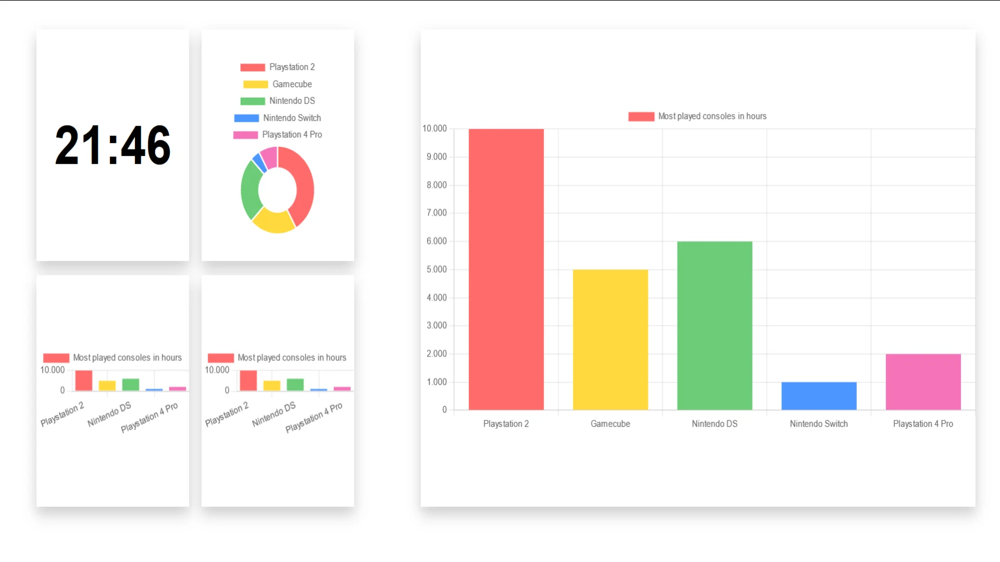
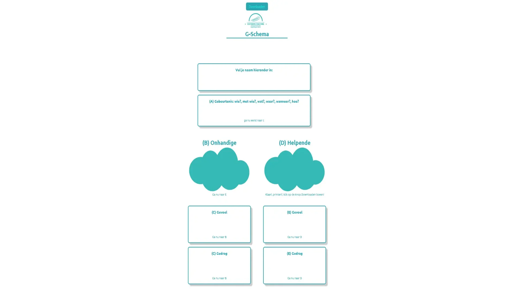

 Dashboard Html, CSS & JS. Bij dit project bouwde dashboard, de data op de dashboard ging ik fetchen van eigen gemaakte datalist in mijn JS bestand. Meer uitleg
 G-schema Html, CSS, SCSS & JS. Bij dit product bouwde ik een g-schema in mijn eentje voor een school opdracht, doormiddel van JS werd de ingvoerde data opgeslagen. Meer uitleg
Pikmin Bloom Html & CSS Bij dit project bouwde ik een BLOG site maar daarin pikmin bloom, pokemon & Yoshi. Meer uitleg